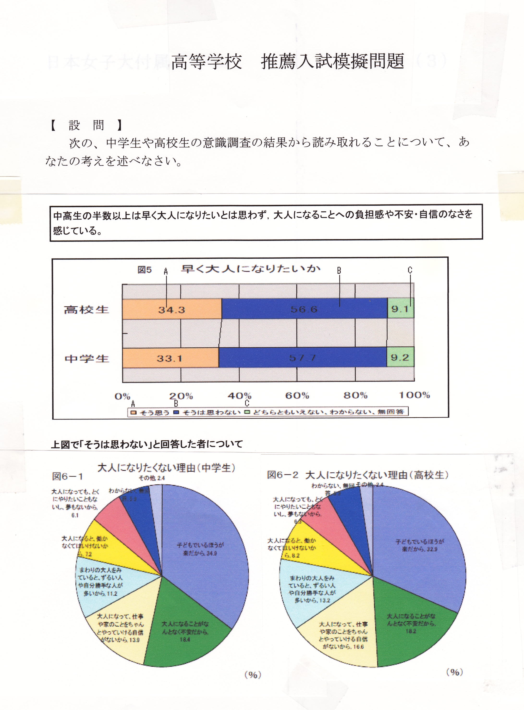
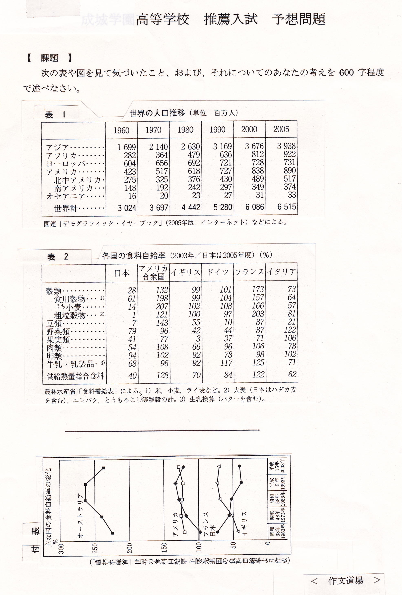
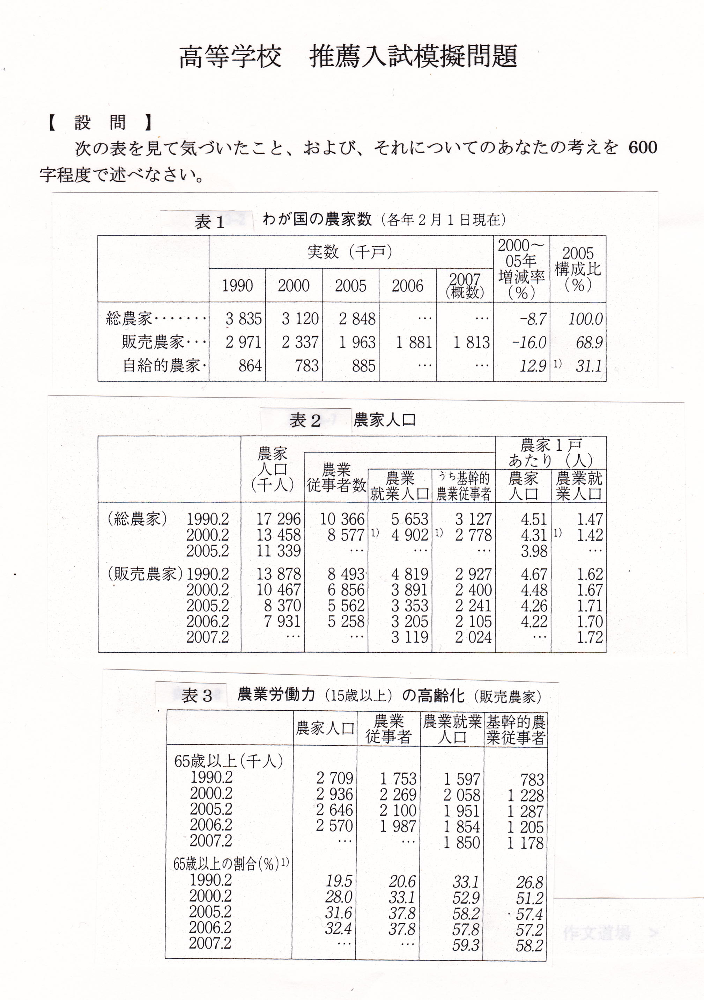
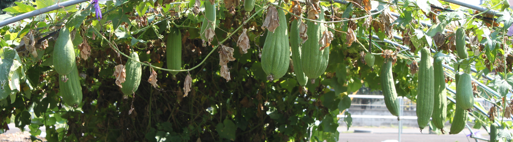

準備中

答案百花 光る文章講座 高校入試の小論文 ― 私立編 ― ○ はじめに |
① 「将来の夢」 ② 「私の挑戦」 ③ 「友人論」「友情論」 ④ 「いじめ」 ⑤ 「悩んでいる娘に」 ⑥ 「大人になることの不安」 ⑦ 「食料自給率」 ⑧ 「日本の農業」 ⑨ 「21世紀は環境の世紀」 ⑩ 「国際社会への日本の貢献」 ⑪ 「感覚と論理」 ⑫ 「近ごろ気になること」 ……………………………… ◎ 模擬問題の作成 |
|
高校入試の作文・小論文（講座案内） 中学生の国語（講座案内）
答案百花・総合案内
答案百花「高校入試の小論文」 →公立編
作文打出の小づち
総もくじ
作文編 国語編 小論文編 閑 話
Gallery（作品展示場） トップページへ
○ はじめに
①～③は、学校を問わず、よく出される課題である。
ここでは特に、優れた答案を紹介しよう。
これらの課題は、
本番で出題されなくても、願書の作成や面接に役立つことなので、
別編「高校入試の作文」と合わせて参考にされたい。
なお、作文と小論文の違いや書き方については
「高校入試の作文・小論文」の書き方講座を参照。
ただし、実際の答案について、
試験官は「これは小論文で、これは作文だ」
というふうな読み方をしているわけではない。
内容に光るものがあり、まとまっていさえすればよいのである。
④～⑧は文章や資料（統計やグラフ）の読解を要するものである。
ここでは主に、問題が公表されていない学校の
模擬問題をもとに書かれた答案を紹介する。
ちなみに、出題校は、
④、⑤と⑨が早稲田実業、⑥が日本女子大附属、
⑦と⑧が成城学園、⑩が立命館宇治で、
⑪は桐光学園である。
⑫は①～③と同様、いろいろな学校で出題されている。
…………………………………………………………………………
◎ 模擬問題の作成（過去問が非公表の場合）
例えば、成城学園高校や日本女子大付属高、早稲田実業では
入試問題は公表されていません。説明会で概要の説明があるだけです。
早稲田実業では先輩からの情報が頼りです。
そのような場合、概要をもとに模擬問題を作成します。
そっくりというわけにはいきませんが、
「当たらずといえども遠からず」でしょう。
演習では、これらに類例問題を援用し、予想問題で仕上げをします。
このようにして、成城学園にはＳＫさん、ＭＯさん、日本女子大附にはＣＭさん
早稲田実業にはＹＫくん、ＤＯくん、ＫＴくんがが合格を果たしています。
① 「将来の夢」
類題には、「私の夢」、「私の将来像」、「夢をかたちに」等があるが、
書き方の基本は「実績をもとに抱負を述べる」ことである。
このパターンで一つを書いておけば、
「この高校に入ったら」、「50年後の私」等に応用できるのみならず、
何より面接に役立つ。
ここでは、「税の作文」で３冠に輝いた花梨さんの答案を紹介しよう。
なお、これは中２の冬に書いたものである。
| はじめの答案 | 添削例・諸注意 |
| 私は日本で生まれ、日本で育ってきた。1日三度の食事をとり、学校へ行き、家族とともに屋根のある家で寝る、という生活はあたり前だと思っていた。 私の住んでいる市の小中学校では、何年か前から毎年ネパールへ文房具の支援を行っている。この活動は、ノートや鉛筆がなくて勉強ができないネパールの子どもたちに、使わなくなった鉛筆などをプレゼントするというものだ。私が、世界には学校にも行けなければ、寝る所や食べ物すらないという貧しい人々がたくさんいると知ったのは、これがきっかけだった。また、ネパールについて調べることにより、自分はどんなに恵まれていて幸せなのか、そして、どんなに貧しくても、頑張って明日を生きようとするネパールの子供たちの強さを知ることができた。 中学2年生になった今、私は将来、世界のことを考える仕事、特に環境に関する仕事がしたい。もともと環境について考えることは好きだった。しかし、最近、環境問題が深刻になるにつれ、よけいに興味をもった。それに、自然環境を汚染し破壊したのは、日本をはじめとする先進国の人々なのだ。現在の地球上には国境はあるが、空気の境目はない。つまり、環境汚染は地球上に住むあらゆる生物に影響を与える。しかし、多くの発展途上国の人々は、環境問題に関心を払う余裕がない。毎日を生きるのに精一杯なのである。だから、私は、そもそも環境問題の原因をつくり、環境について十分に勉強できる場を与えられている先進国の人々が環境問題に取り組むべきだと思う。結局、困るのは自分たちなのだから。 |
※ 二つ目の文から始め、最初の文は気づいたこととして、そのあとにつなぐ。 ← 買ったまま使っていない鉛筆などを ← これがきっかけで、私は……を知った。 ※ ……幸せなのか、そして、……かを知ることが……（※ 並列の形を整える）。 ← ……をしたいと思っている。 ← ……影響を与えている。これに対し、多くの…… ※ 「だから、私は、……」で改行して、自分も先進国の一員であるという立場から「将来」についての抱負を述べてみよう。 |
| 書き直した答案 | 添削例・諸注意 |
| 私は1日三度の食事をとり、学校へ行き、家族とともに屋根のある家で寝る、という生活はあたり前だと思っていた。しかし、それは日本で生まれ、日本で育ってきたからなのだと気がついた。 私の住んでいる市の小中学校では、何年か前から毎年ネパールへ文房具の支援を行っている。この活動は、ノートや鉛筆がなくて勉強ができないネパールの子どもたちに、買ったまま使っていない鉛筆などをプレゼントするというものだ。これがきっかけで、私は、世界には学校にも行けなければ、寝る所や食べ物すらじゅうぶんにない、貧しい人々がたくさんいることを知った。また、ネパールについて調べることにより、自分はどんなに恵まれていて幸せなのか、そして、貧しくても、明日を生きようとするネパールの子供たちがどんなに強いかを知ることができた。 中学2年生になった今、私は将来、世界のことを考える仕事、特に環境に関する仕事がしたいと考えている。もともと環境について考えることは好きだった。しかし、最近、環境問題が深刻になるにつれ、よけいに興味をもった。それに、自然環境を汚染し破壊したのは、日本をはじめとする先進国の人々なのだ。現在の地球上には国境はあるが、空気の境目はない。つまり、環境汚染は地球上に住むあらゆる生物に影響を与えているのだ。しかし、多くの発展途上国の人々は、環境問題に関心を払う余裕がない。毎日を生きるのに精一杯なのである。 だから、私は先進国の一員として、地球の自然を守る仕事をしたいと思うのだ。それにはまず、身近なことから始めたい。例えば、買い物に行くときは買い物袋を持参する、ゴミになる部分の少ない物を買う、買ったものは大切に使う、油や化学物質の多い洗剤は下水に流さない、米のとぎ汁は庭にまく、エアコンや車はなるべく使わない、などだ。それができるようになったら、今度はいろいろな人に呼びかけをする。そして、将来はＮＰＯなどで働き、最終的には国連で働きたいと思う。 |
← ……考えることは好きだったが、最近、 ◎ 大きな仕事も、できるところから始めるというのがいいね。 |
花梨さんは現在、国立大学の教育学部・国際関係学科に進み、
夢の実現に向かって着実に歩んでいる。
もどる
力強い答案を紹介しよう。
| はじめの答案 | 添削例・諸注意 |
| 私の中学校では、年に１回「合唱コンクール」という行事があります。クラスごとにそれぞれ選んだ曲と課題曲の２つを練習し、当日の発表まで、優秀賞を目指してがんばります。私はそのコンクールで伴奏に挑戦し、３年連続で最優秀伴奏者賞をいただくことができました。それは私にとって大きな挑戦であり、とても思い出深い出来事でした。 １０月に行われる合唱コンクールに向けて、クラスでは１か月ほど前から練習が始まります。私は１，２年生のときのコンクールで２回とも伴奏者賞をいただいていました。そのため、早くから「今年も伴奏者賞をねらいたい」という気持ちがあったので、３年生でも伴奏を希望しました。クラスごとに１人または２人が伴奏します。私は小さいときからピアノを習っていたので、ピアノを弾くことには自信がありました。しかし、私たちの学年はピアノを習っている人が多かったので、その中で伴奏者賞を取ることは、そう簡単にできることではありませんでした。 始めは、どうしても伴奏者賞がほしくて自分のためだけに練習していました。だんだん当日が近づいてきて、クラスのみんなが心を一つにして練習に取り組むようになり、合唱も出来上がってきました。すると、私はただ自分が伴奏者賞を目指すだけではなく、みんなの合唱のために、少しでも歌いやすいように弾きたいと、強く思うようになりました。私の挑戦は私だけのものではなく、みんなで一つのことをやり遂げるところにあるのだと感じました。そして、本番ではみんなの歌と一つになった伴奏をすることができました。私は伴奏者賞と、大きな達成感を得ました。 これからも私は自分一人の挑戦だけでなく、たくさんの仲間とともにいろいろなことに挑戦していきたいです。 |
※ 「私はその……」以下の２文をこのように最初に示しておくのも１つの方法だが、ドラマチックに仕立てるなら、結論部に回すとよい。 ← ……伴奏者賞をいただいていたので、早くから……という気持ちがあり、３年生でも…… ← ……ほしくて、間違えないようにとだけ考えて練習していました。 ← ……出来上がってきました。その時、私は…… ← ……あるのだと気がつきました。 ※ 合唱のほうの結果はどうだったのだろう。 ※ 「私はこの時、みんなで挑戦することのすばらしさを知りました」という意味のことを、結論部か、その前の所に入れておこう。 |
実績がよく、誤字・脱字もないので、このままでもよいが、
結論部に一工夫を加え、ついでに細かなところも直してみよう。
| 書き直した答案 | 添削例・諸注意 |
| 私の中学校では、年に１回「合唱コンクール」という行事があります。クラスごとにそれぞれ選んだ自由曲と課題曲の２つを練習し、当日の発表まで、優秀賞を目指してがんばります。 １０月に行われる合唱コンクールに向けて、クラスでは１か月ほど前から練習が始まります。私は１，２年生のときのコンクールで２回とも最優秀伴奏者賞をいただいていたので、早くから「今年も伴奏者賞をねらいたい」という気持ちがあり、３年生でも伴奏を希望しました。クラスごとに１人または２人が伴奏します。私は小さいときからピアノを習っていたので、ピアノを弾くことには自信がありました。しかし、私たちの学年にはピアノを習っている人が多かったので、その中で伴奏者賞を取ることは、そう簡単にできることではありませんでした。 始めは、どうしても伴奏者賞がほしくて、間違えないようにとばかり考えて練習していました。だんだん当日が近づいてきて、クラスのみんなが心を一つにして練習に取り組むようになり、合唱も出来上がってきました。その時、私はただ自分が伴奏者賞を目指すだけではなく、みんなの合唱のために、少しでも歌いやすいように弾きたいと、強く思うようになりました。私の挑戦は私だけのものではなく、みんなで一つのことをやり遂げるところにあるのだと気がつきました。そして、本番ではみんなの歌と一つになった伴奏をすることができました。合唱のほうは最優秀賞ではなかったけれど、目標の優秀者賞に輝き、私たちは手を取り合って喜びました。私は最優秀伴奏者賞と大きな達成感を得ました。 私はこの時、みんなで挑戦することのすばらしさを知りました。これからも私はいろいろなことに挑戦することになると思いますが、仲間がいるときはみんなの心を合わせることを考えようと思います。 |
○ ドラマチック仕立てに「挑戦」してみるわけだね。 ◎ ここでドラマは盛り上がったね。 |
筆者のＳさんの高校への挑戦は、県立宮城第一女子高校（現宮城第一高校）で、
見事に、あるいは順当に、合格を果たした。
もどる
③ 「友人論」「友情論」
「……論」というタイトルを見ると、受験生は構えてしまうかもしれない。
そうなると、たいていは理屈をこねまわすことになるのだが、
決して「友人とは……」とか、「友情とは……」と始めてはならない。
大切なのは体験であり、事実である。
それをもとに、そこから考えを発展させればよい。
ここは小論文のサイトなので、このようなタイトルとしてみたが、
実は、これから紹介する２つの答案は
それぞれ「友達について」、「友情について」という題で
書かれたものである。
友人についてのユニークな話と、友情についての熟慮の話を紹介しよう。
まず、「友達について」から。
| はじめの答案 | 添削例・諸注意 |
| 私が今最も大切にしているもの、また、これからもずっと大切にしていきたいものは友達です。私には今、小学生、中学生のときに作った大切な友達がたくさんいます。これらの友達を大切にしていきたいと思います。 私の父には今も高校生からの友達がいて、家族ぐるみで付き合っています。そんなにしょっちゅう会っているわけでもないのに、二人が話しているのを見ると、何だか毎日会社で会って話しているかのように思われます。きっとそれは高校時代そのままなのでしょう。そんな二人を見て、私はとてもうらやましく思い、私も大人になってからもこのように付き合っていける友達を作っていきたいと思っています。 私には今、色々な友達がいます。とてもやさしい人や一緒にいてとてもおもしろい人、私はそんなみんなと一緒にいるときが一番楽しく、このままずっとつきあいたいという気持ちになるのです。その中には、部活の友達もいます。部活ではつらいこともありましたが、今までやめずに続けてこられたのも、友達がいてお互いに励ましあってきたからだと思います。 私は、高校生になってできる新しい友達をたくさん作って、ずっと大切にしていきたいと思います。高校を卒業してからも、私はきっとたくさんの友達と出会い、色々な経験をしていくと思います。私はその中で、心から話し合える友達を増やし、大切にしていきたいと思っています。 （以上、約６００字） |
← 私が今最も大切にしているのは友達です。これからもずっと大切にしていきたいと思います。 ※ 書き出しをこうしておいて、今の友達のことは第３段落にまわそう。 ← 高校時代からの友達 ← とてもやさしい人やとてもおもしろい人がいます。 私は高校生になっても友達を…… ※ 友達はなぜ大切なのか。それをもっと突っ込んで考えてみよう。 |
何と言っても、お父さんの話がおもしろい。
これを中心にして書き直してみよう。
| 書き直した答案 | 添削例・諸注意 |
| 私が今最も大切にしているのは友達です。これからもずっと大切にしていきたいと思います。 私の父には高校時代からの友達がいて、今も家族ぐるみで付き合っています。そんなにしょっちゅう会っているわけでもないのに、二人が話しているのを見ると、何だか毎日会社で会って話しているかのように思われます。きっとそれは高校時代そのままなのでしょう。そんな二人を見て、私はとてもうらやましく思い、私も大人になってからもこのように付き合っていける友達を作っていきたいと思っています。 私には小学生のときからの友達や中学生になってからできた友達など、色々な友達がいます。とてもやさしい人やとてもおもしろい人がいます。私はそんな人たちと一緒にいるときが一番楽しく、このままずっと付き合いたいという気持ちになります。その中には、部活の友達もいます。部活ではつらいこともありましたが、今までやめずに続けてこられたのも、友達がいてお互いに励ましあってきたからだと思います。 友達は私の気持ちを和ませてくれ、また、話をしていると、私の知らない世界へ連れて行ってくれることもあります。私の世界が広がります。だから、私は、高校生になっても新しい友達をたくさん作って、父の友達のような心から話し合える友達を増やし、大切にしていきたいと思います。 （以上、約６００字） |
友達のよさが入ったことによって、説得力のあるものになった。
また、おしまいの段落で、じゅうぶん「論」になっている。
次に、「友情について」。
| はじめの答案 | 添削例・諸注意 |
| 私は今まで多くの人と友達になり、ケンカをしたり、思いをぶつけ合ったりしながら友情を深め合ってきました。その中でも特に感じたことは、本当の友達とは相手のことを考えて、間違っていることに対してはきちんと注意できる人のことではないかということです。 私が中学２年生のころ、部活動で３年生が引退し、私たち２年生が中心となって部活を進めていかなければならない時が来ました。私は部長に選ばれ、これからが大事だという時でした。しかし、私はその時、生徒会執行部の会計もしていたので、放課後に生徒会活動があると、部活動に遅れてしまいます。私は自分の役目に責任を感じて、何とかしようと考えましたが、部員にはいつも迷惑をかけてしまっていました。そんなある日、友達でもある部員の一人が私に 「部活動と生徒会を両立させたいのはわかるけど、なかなか部活に来られない時は、もっと私達に頼ってほしいな」 と言いました。とても厳しく言われたような気がして、その時は落ち込みましたが、私にとって一番必要な言葉だったと思います。 この出来事を通して、私は今一番自分が何をすべきなのかということに気づき、同時にそのことに気づかせてくれた友達にとても感謝しました。そんなふうに人にアドバイスをするには、真に相手の気持ちを知ろうとしなければできないと思います。私は今でもその友達とは本気で話ができる気がします。自分にとって大切な友達とはこのようにして出来ていくのだと思います。 （以上、約６５０字） |
← 中２の秋になって、 ※ 「……考えましたが、部員には……」のところに、「伝達がうまくいかず、」とでも入れよう。 |
「もっと私達に頼ってほしいな」というのが、強烈である。
言いも言ったり、聞くも聞いたりといったところだが、
互いに信頼があるから言えることなのだろう。
この一言と締めくくりの一文によって、卓抜の「論」となっている。
もどる
④ 「いじめ」
いじめは後を絶たないようであるが、昔はどう対処していたのだろうか。
早稲田実業では興味深い話とともに出題されている。
| 【 設 問 】 次の文章を読んで、「いじめ」についてあなたの考えを書きなさい。 （800字） 父の教え 私にとって幸運だったのは、ことあるごとにこの「武士道精神」をたたき込んでくれた父がいたことでした。父からはいつも「弱い者いじめの現場を見たら、自分の身を挺してでも、弱い者を助けろ」と言われていました。 父は「弱い者がいじめられているのを見て見ぬふりをするのは卑怯だ」と言うのです。私にとって「卑怯だ」と言われることは「お前は生きている価値がない」というのと同じです。だから、弱い者いじめを見つけたら、当然身を躍らせて助けに行きました。 私は体格がよくて力も強かったので、必ずいじめている者たちを蹴散らしました。それを報告するたびに父は本当に喜んでくれました。あれほど喜んでくれたことは、他にはほとんど思いつきません。母は渋い顔で、「正義の味方もほどほどよ。暴力少年のレッテルを貼られ、内申書にでも書かれたら、行きたい中学にも行けませんよ」なんて言ってましたが。 父は、「弱い者を救う時には力を用いても良い」とはっきり言いました。ただし五つの禁じ手がある。一つ、大きい者が小さい者をぶん殴っちゃいかん。二つ、大勢で一人をやっつけちゃいかん。三つ、男が女をぶん殴っちゃいかん。四つ、武器を手にしてはいかん。五つ、相手が泣いたり謝ったりしたら、すぐにやめなくてはいかん。「この五つは絶対に守れ」と言われました。 しかも、父の教えが非常に良かったと思うのは、「それには何の理由もない」と認めていたことです。「卑怯だから」でおしまいです。 藤原正彦『国家の品格』（新潮社） |
はじめの答案では、
問題文への言及が第3段落目になっていたのを
最初にもってきて書き直した。
| 書き直した答案 | 添削例・諸注意 |
| 問題文には、「弱い者いじめを見つけたら、当然身を躍らせて助けに行きました」というところがあるが、僕はそこに限りない共感を覚える。 新聞を見ていると、「いじめ」による被害が年々増加している。学校について見てみると、生徒間のいじめが多発している。実際、僕も何度かいじめの現場に遭遇し、注意したことがある。しかし、いじめの厄介なところは、けんかを止めた場合と違って、注意をすると、今度は注意した人がいじめの標的になる可能性があることだ。いじめの現場を見た人が、ほとんど見て見ぬふりをするのはこのためだ。 僕は一度だけ見て見ぬふりをしたことがある。小学校4年生のとき、クラスの友達がいじめられていたが、見て見ぬふりをした。関わるのが面倒だったからである。しかし、あのとき助けていれば、あんなことにならなかったかもしれないと今も思う。その友達は数日後から学校に来なくなった。そして、その子の親を度々学校で見かけるようになった。２か月後、その子は学校からいなくなってしまった。僕はその子の友達の一人だった。その子は、いじめられたことよりも、友達に見放されたことがつらくて、学校をやめてしまったのかもしれない。それが決め手になっていたかもしれないと思うと、とてつもない罪悪感に襲われた。 それ以来、僕は見て見ぬふりをしないようにした。二度と大切な友達を失わないためにも、うわさを聞いただけでも、いじめをしている子たちに、止めるよう呼びかけている。 問題文を読むと、もう一つ共感するところがある。「禁じ手」のところだ。その一つ一つがとても大切なことに思われる。僕がいじめを止めさせるときは腕力を必要とせず、口で言うだけで済んだが、こんな心構えも必要だと思った。 （以上、約800字） |
◎ 違いの認識がすごい。体験して初めて分かることことなのだね。 ← その子のお母さん（両親）を…… ※ ここで締めくくりにしてもよいのだが、次の段落は字数調整のためなのだね。 |
これを書いたKくんは優れた運動選手だから、腕力もあるであろうが、
「爪を隠す」タイプでもある。
早稲田実業では、環境問題などのほかに、
「『転ぶ人と転ばない人』について」とか、前項の「いじめ」などの
人生についての課題も出される。
この課題もそれらと同類であるが、
父親の立場で助言するのであるから、これには創作も要する。
| 【 設 問 】 自分の娘が学校行事のことで悩んでいるとします。親のあなたはどう励ましますか。 （800字） |
| はじめの答案 | 添削例・諸注意 |
| 私の娘は、何か悩んでいるようだった。私は娘に、「どうしたの？」と尋ねると、「私、足が遅いから、全員リレーでクラスの皆に迷惑かけちゃうの」と答えた。そんな悩みをもっている娘に、私は「体育祭は勝ち負けだけの戦いじゃないんだよ。自分の力を精一杯出してがんばれば、きっとクラスの皆も応援してくれるよ」と声をかけた。そうすると、娘は元気を取り戻し、大きな声で「私、がんばってみる」と言って、体育祭の朝練習に飛びだしていった。 その次の日から、娘は学校から帰ってきてからも公園に行き、50メートルダッシュを繰り返していた。そんな娘のがんばりを見て、私は安心した。 体育祭当日の朝、娘は「お父さん、私がんばってくる。しっかり見といてね」と言って家を出ていった。私は娘の活躍をみようと、一番前に席をとった。どんどんプログラムが進んで、ついに娘の出る全員リレーの番になった。娘の走る順番が近づくにつれ、私の緊張も増していった。娘の走る番がきた。前のランナーからバトンを受けて走りだした。後ろのランナーとはあまり差はない。私は少し不安になりながらも、声を張り上げて、応援し続けた。娘はクラスの皆の声援を受けて、楽しそうに走っていた。それを見て、私はとても安心した。努力した成果が出たと思った。クラスの皆の声援の中で、娘は抜かれずに、次のランナーに無事にバトンを渡した。走り終えた後、娘は私を見つけてガッツポーズをした。 家に帰ってくると、娘は「お父さん、ありがとう」とだけ言って、自分の部屋へ行った。そのとき、私はアドバイスしておいてよかったと思った。 （以上、約７２０字） |
← 私、がんばる。しっかり……」 |
これを書いたのは男子である。前項のKくんと同様、
体格のいい運動選手で、いわば猛者である。
それが、根は優しいのだ。すっかり父親になりきっている。
もどる
⑥ 「大人になることの不安」
入試問題が公表されていない場合、
学校説明会などでの情報をもとに模擬問題を作って演習に充てる。
下記は日本女子大附属高校の場合の例である。
※ グラフの細かな文字や数値については図の下の表参照。

| 高校生 | A.そう思う：３４.３％ | B.そうは思わない：５６.６％ | C.どちらともいえない：９.１％ |
| 中学生 | A.そう思う：３３.１％ | B.そうは思わない：５７.７％ | C.どちらともいえない：９.２％ |
| （時計回りに） | 中学生 | 高校生 |
| 子どもでいるほうが楽だから | ３４.９ | ３２.９ |
| 大人になることがなんとなく不安だから | １８.４ | １８.２ |
| 大人になって仕事や家のことをちゃんとやっていく自信がないから | １３.９ | １６.６ |
| まわりの大人を見ていると、ずるい人や自分勝手な人が多いから | １１.２ | １３.２ |
| 大人になると、働かなくてはいけないから | ７.２ | ８.２ |
| 大人になっても、とくにやりたいこともないし、夢もないから | ６.１ | ６.３ |
| わからない | ５.９ | ５.３ |
| その他 | ２.４ | ２.４ |
| ２度目の答案 | 添削例・諸注意 |
| 図５によると、中高生とも半数以上の人が、早く大人になりたくないと思っている。その理由として、図６－１，２では、子供でいるほうが楽だからというのが３分の１を占め、大人になることに不安があるから、自信がないから、働かなくてはいけないから等のことがこれに続いている。 私は早く大人になりたい。ただ大人になって自分の好きなように生活がしたいのではない。働くということに興味があるからだ。働くということは簡単ではないことは分かっている。しかし、それを踏まえたうえで、働きたいと思っている。そう思ったのは、２年生の時の職場体験がきっかけだ。私は２日間、デイサービスセンターの仕事を体験させてもらった。その時に、お年寄りの方々とお話をしたり、車イスを押してあげたりした。この体験を通し、働くということを知ったような気がした。体験後に、クラスで体験した仕事について発表しあった。その時に、働くことに興味をもったという人がクラスのほぼ全員だった。この時に、私は早く大人になって働きたいと思った。 私は、大人になるということは、他人のことに目を向け、社会の役に立てるようになることをいうのではないかと思う。大人になったら働かなくてはならない。なぜなら、日本国憲法に記載されている国民の義務の３つのうちの１つに勤労の義務というのがあるからだ。その働くということは、人のためになることだと思う。 大人になりたくない中高生が多いのは、どうにかしなくてはいけない問題だ。なぜなら、大人になりたくない子どもが大人になっても、社会を支えることはできないからだ。そのことから、私は、大人になるということは自分に自信をもつことでもあるのではないかと思う。自分に自信をもっていれば、どんな困難にも立ち向かえるだろう。 私は、中高生のみんなが、大人になることに不安を感じないようにするためには、大人たちが私たちに協力してくれることが大切だと思う。私たちみんなが自分の夢、つまり、したいことを見つけ、自分に自信をもつことができれば、大人になることへの不安は解消されるだろう。そのために、もっと私たちが夢について考える時間を与えてほしいと思う。夢について考えるには、私がしたような職場体験がいいかもしれない。私は職場体験するまで、特別な夢もなく、福祉の仕事などには興味がなかった。しかし、実際に体験してみると、その仕事のいいところがどんどん見えてきた。人のために何かができることや、相手と不覚関われることなど、たくさんあった。この体験を通して、私は福祉に興味をもち、福祉関係の仕事をしたいと思った。 私は今、大人になることへの期待でいっぱいだ。だから、大人になることへ不安を抱いている人に働くことの素晴らしさを教えてあげることで、その人の不安を少しでも和らげてあげられたらと思う。 （以上、１２００字） |
◎ 表やグラフを読むときは、最も目立つところに注目すればよいのだね。 ← ただ、大人になって…… ← それが簡単ではないことは……（※同じ表現の繰り返しを避ける）。 ← 日本国憲法に、国民の三大義務の１つとして、勤労の義務が規定されているように、大人になったら働かなくてはならない。その働くということは、他の人にも目を向け、社会の役に立てるようすることではないかと思う。 ← ……立ち向かえるだろうからだ。 ← 私たちが夢について考える時間をもっと与えて…… ◎ 単に「いいところ」と言うのではなく、具体的にその例を挙げてあるのがいいね。説得力がある。 |
資料に体験を照応させ、「不安」についてよく考えている。
論文調でいえば、「よく考察されている」。
第３段落のぎくしゃくさ加減に注意すれば、書き直すほどのことはない。
このままでも、じゅうぶん合格答案になっている。
「食料自給率」については、当分あちこちで出題されると予想される。
念のため、グラフ類を読むときのポイントは、
「目立つところに注目する」ことである。

上の課題では制限字数を600字としたが、
800字や1200字のところもあるので、
ここでは600字と1200字の、２つの答案を紹介しよう。
| ２度目の答案 | 添削例・諸注意 |
| 表１からは世界の人口が約半世紀の間に２倍以上に増えていること、表２からは日本の食料自給率は５０％を切って、先進国の中では最も低いことが分かります。 日本の食料自給率が低い理由は、一つは日本は耕地面積が狭く、農業に適した土地が少ないから、もう一つは少子高齢化が進み、農業を受け継ぐ人が少なくなっているからと考えられます。 世界では全体的に人口が増えてきていることから、人口が増えた分、食料がそちらに回ると考えられ、輸入が難しくなるのではないかと思われます。このようなことから、日本はいつまでも輸入に頼っていると、食料がまかなえなくなってしまう恐れがあります。 日本の自給率をこれ以上下げないようにするには、国内生産を上げなければなりません。日本は、現在は５０％をきっていますが、かつては７５％を自給していたので、努力すれば７５％まで戻せると思います。そのためには、棚田などの休耕田を再開発し、農業を受け継ぐ人を増やさなければならないと思います。農業を受け継ぐ人を増やすためには、若い人が農業に興味をもつようにすることが大切です。 農業とはどのようなものかを知るために、私たち若い人が身近で体験できたらいいと思います。 （以上、約６００字） |
← 少子高齢化に加え、農業を受け継ぐ人が…… ← 付表によると、かつては７５％を自給…… |
人ごとのように語るのではなく、
「私たち若い人が……」と言っているのがいいね。
,200字の場合も見ておこう。
| ２度目の答案 | 添削例・諸注意 |
| 表１を見ると、世界の人口が１９６０年に比べ、２００６年には２倍以上になっている。表２では、日本の食料自給率が他の国に比べて低く、日本に次いで低いイタリアでも６２％あるのに対し、日本は４０％と極端に低い。種類別の自給率では豆類、穀類が低く、豆類の自給率は７％、小麦の自給率は１４％となっている。付表からは１９６３年から２００２年までに、他の国は自給率が上がっているのに、日本だけは下がっていて、５０％を下回っていることが分かる。 食料についての日本の問題点は、自給率が低いということだ。外国に頼っているばかりでは、もしも戦争が起こって外国との関係が悪くなれば、食料が断たれるかもしれない。何より、世界の人口が増えると食料が足りなくなり、日本に回ってこなくなるかもしれない。 今、日本で食料自給率が下がっている原因の一つは、高齢化や過疎化によって農業の従事者が減っていること、もう一つは、日本人の米離れが考えられる。農業人口を増やすためには、私たちのような若者が農業に興味をもてるような環境づくりをする必要がある。昨年、渋谷のギャルたちが農業をするというニュースを見た。このプロジェクトを立ち上げた人はまだ２４歳だ。もともと、１９歳で自分で始めた会社の社長をしていたが、「食と農」ということに興味をもち、社長を辞めて若い人たちに農業を知ってもらおうとしたのだそうだ。このような活動があれば、それを通して私たちは農業に関心をもつことができる。一方、米離れを食い止め、米の消費量を増やすには、具体的には、米粉を加工して毎日の食事に使うことが考えられる。日本の小麦の自給率は低いが、米粉が小麦粉の代わりになるからだ。私は以前、米粉で作られたドーナツを食べたことがある。米粉で作られていると知らなければ、小麦粉から作られていると思うほど、小麦粉と何の違いも感じられなかった。そして、とてもおいしかった。米粉はパンを作るのに使うことができる。だから、私たちが毎日のように食べるパンを米粉で作れば、食料自給率を上げることができるだろう。もし、店などで売れないのなら、学校の給食のパンを米粉で作れば、米粉のおいしさを広めるのに役立つだろう。 今の日本は食料自給率を上げなければならない時期に来ている。かつては７５％も自給できていたのだから、回復が難しいことではないと思われる。問題は国民全体がいつそれに気がつくかということであろう。 （以上、約１１００字） |
← 他の先進国に比べて ※ 「昨年、……」で改行しよう。 ◎ このギャルたちの話は、提案の裏づけとしてすばらしい。 ※ 「一方、……」でも改行しよう。 ◎ 「米粉」のことも裏づけとして、じゅうぶん説得力がある。 ← ……米粉で作れば、米の需要を増やすことができるだろう。 ◎ そのとおりだね。 |
提案の裏づけがしっかりしていて、堂々たる論文になった。
これは成城学園高校の模擬問題であるが、
食料自給を考える上では、大事な課題でもある。
まず、「目立つところに注目」しよう。

実際の入試問題では計算問題などの小問が設けられているようだが、
ここでは省略する。
| ２度目の答案 | 添削例・諸注意 |
| 1990年から2005年にかけて、表１からは農家数が約100万戸減少していること、表2からは農家人口が約600万人減少していること、また、表3からは農業労働力の65歳以上の割合が約３３％から約60％に増えていることが読み取れる。 農業人口が減って高齢者の割合が増えている原因として考えられるのは、一つは農作業を嫌がる若者が増えて、後継者が少なくなっていること、もう一つは外国から安い果物や野菜が入ってきていること、さらに、食生活の変化によって、パンや肉類が多く食べられるようになっていることなどが挙げられる。 このような傾向の中で最も心配なのは、日本の食料自給率が５０％を下回っていることである。もし、農業人口がこのまま減り続けると、自給率はますます下がってしまい、食料の大部分を外国に頼らなければならなくだろう。そうなった時、もし輸入先の国とトラブルがあったり、発展途上国に食料が回ったりすると、日本は食料不足に陥ってしまう。 現在の日本が急がなければならないのは、食料自給率を上げることである。そのためには、何より農業人口を増やさなければならないが、そのためには農産物の需要を増やし、農業を魅力あるものにすることが大切と思われる。これについて、私にできることは何かと考えると、和食を見直すことが思い浮かぶ。和食は健康にもよいことだと言われるので、周りの人にも働きかけてみようと思う。 （以上、約６００字） |
◎ 簡潔によくまとまっている。 ◎ 原因を挙げればきりがないので、3点にとどめるのがよいだろう。 ◎ ふだんは目立たないが、考えなければならないのは食料のことだろうね。 ◎ 制限字数いっぱいの辺りで窮屈そうだが、いい締めくくりとなっている。 |
評論風に終わらずに、つまり、人ごとのように考えずに、
自分の姿勢を示していることに好感がもてる。
環境問題については前世紀末から深刻の度合いを増し、
まさに２１世紀の大きな課題となっている。
次の答案は2008年１月時点で書かれたものであるが、
歴史を画するものとして
「地球サミット」と「京都議定書」を理解しておきたい。
| ２度目の答案 | 添削例・諸注意 |
| 今、地球は温暖化という大きな問題を抱えている。この温暖化が地球に大きな影響を与えているのは紛れもない事実である。現在、地球の平均気温は５０年前と比較して少し高くなっている。この原因は我々が使用する車や工場から排出される二酸化炭素などであることが明らかになっている。温室効果ガスは太陽熱を吸収して大気圏を温室化し、温暖化を起こすのである。 この問題については早くから指摘されていたが、１９９０年代に入って、インド洋に位置するモルジブ共和国が数年後には北極や南極の氷がとけることによって海面下に没してしまうことが問題となった。この問題が原因となって温暖化を地球規模の問題として考えなければならなくなった。そこで、国連が世界各国の政府や産業団体に呼びかけて、１９９２年にブラジルのリオデジャネイロで「環境と開発に関する国連会議」、いわゆる「地球サミット」が開かれた。この会議の成果は２１世紀に向けての「環境と開発に関するリオデジャネイロ宣言」にまとめられ、「地球温暖化防止条約」などが調印された。 この５年後に具体化への歩みが始まった。それが１９９７年の「温暖化防止京都会議」である。この会議では排ガスの削減目標が話し合われ、「議定書」が採択された。これによると、１９９０年の排ガス量を基準として、２０１０年ごろを目途に、ＥＵ，アメリカ、日本、その他の先進国は５～１０％を削減することになっている。２１世紀に入って、世界１３０国余りの国や地域が批准したが、排出量の５分の１を占めるアメリカがこの議定書から離脱し、また、工業大国のインドや中国は削減義務を負っていない。 この問題は米・中・インドの３か国を含めた世界が一致協力して取り組まなければならない課題である。地球の将来を考えると、早急に解決しなければならない。今度の「洞爺湖サミット」でもこの問題は主要議題となっている。このような動きを見ても、２１世紀は環境の世紀であることが実感できる。 （以上、約８００字） |
← ……明らかになっている。これが温室効果ガスとなって太陽熱を吸収し…… ← この問題がきっかけになって |
「京都議定書」は２０１２年で期限を迎える。
このため、「ＣＯＰ１６」（２０１０年）等で、
これに代わるものについての議論がなされている。
余談だが、
この答案を書いたＹくんは、早稲田実業から甲子園出場を果たし、
左翼手で、左中間２塁打を放つなど、大活躍であった。
⑩ 「国際社会への日本の貢献」
次の答案は、アメリカに住んでいるA君が
帰国子女枠で受験するに当たって書いたものである。
| はじめの答案 | 添削例・諸注意 |
| 今、日本はどのようなことで国際社会に貢献できるのか。日本は世界でも屈指の工業国であり、様々な面で技術が進んでいる。私は、これらの技術を有効に使うことによって国際社会に貢献できると思う。 日本が国際社会に貢献できることの一つとして、世界との貿易をより盛んにさせることが挙げられる。現在、日本はアメリカに次いで世界で二番目に国内総生産が多く、世界屈指の貿易大国だ。しかし、近年、日本の国内総生産の伸び率が徐々に低下しており、日本が世界に与える影響力が少なくなっているのが現状だ。その影響力を増やすためには、日本は産業をさらに盛んにし、積極的に世界に輸出するべきだ。特に、海外でも高い評価を得ている車や電子機器類をもっと輸出するべきだ。そうすることによって、世界各国は必要な物を輸入でき、日本は国際社会に貢献していると言える。日本の誇りである工業の技術をさらに発展させ、世界との貿易をより盛んにすることで、わが国は国際社会に貢献することができるのだ。 また、ODA（政府開発援助）を発展させることで、日本は世界に貢献できる。世界の発展途上国には貧しい人々がたくさんおり、食物などが不足している。日本を含む先進国は、ODAを通して発展途上国をより豊かな国にするために努力するべきだ。例えば、彼らが必要な食物を配給したり、医師を現地に派遣することである。日本は医療が発達しており、食物も充分にあるため、発展途上国を助けることは十分に可能なことだと思う。 日本は、世界でも有数の工業大国で、様々な面で技術が進んでいる。そんな日本が今、国際社会に貢献できることは、世界との貿易を盛んにし、ODAの活動を発展させることだ。 （以上、約７００字） |
※ 最初の一文はなくてもよい。 ← 日本は国内総生産がアメリカに次いで…… ※ 輸出を増やすことには無理がある。工業技術を中心にするなら、ODAとの関係で技術援助の方向へもっていくとよい。 ※ 「～べきだ」という言い方は、根拠がはっきりしていない場合は説得力をもたないことに注意。 ← 世界各国が必要な物を輸入できるようになると、日本は国際社会に…… ※ 日本は食料の約６割を輸入していることを考慮しよう。 ODAの一環として「青年海外協力隊」の活動がある。食料に代えてこのことを取り上げてみよう。 ※ 「世界との貿易を盛んにし、」を削除してみよう。すっきりするね。 それよりも、自分ならどんな貢献をするか、抱負を述べよう。 |
評論家ふうに述べるのではなく、自分ならどうするかを考えるようアドバイスする。
| 書き直した答案 | 添削例・諸注意 |
| 日本は世界でも屈指の工業国であり、様々な面で技術が進んでいる。私は、これらの技術を有効に使うことによって国際社会に貢献できると思う。 現在、日本は国内総生産がアメリカに次いで世界で二番目に多く、貿易でも大国だ。しかし、近年、日本の国内総生産の伸び率が徐々に低下しており、日本が世界に与える影響力が落ちてきている。その影響力を増すためには、日本は発展途上国に安価で輸出するのがよいと思う。特に、海外でも高い評価を得ている車や電子機器類をもっと安い値段で提供するのだ。そうすることによって、発展途上国は必要な物を手に入れることができるので、日本は国際社会に貢献していると言える。しかし、途上国は、輸入するばかりでは発展は見込めない。そこで、すぐれた製品を作る技術を伝える必要もある。日本の誇りである工業技術をさらに発展させ、世界との貿易を盛んにするとともに、すぐれた技術も分かち合っていくのだ。そうすれば、わが国はよりいっそう国際社会に貢献することができるだろう。 また、日本はODA（政府開発援助）を行っているが、途上国に橋やダムを造っているほかに、青年海外協力隊がアジアやアフリカの各地で技術教育や学校教育を行っている。このような取り組みは現地の人々と直に接することができるので、国際交流の面でも大いに貢献している。日本はこの方面にもっと力を注ぐと、途上国との友好関係も深まり、世界の平和にも貢献できると思う。 私は今アメリカで生活しているが、ここでの体験を生かして、高校では英語の力を伸ばし、大学では世界の地理や歴史を学び、将来は国際関係の仕事をしたいと考えている。JICA（日本国際協力機構）に入って、日本の工業技術を広める橋渡しをしたいと思う。 （以上、約８００字） |
← 工業製品を安価で輸出する…… ◎ 論述の焦点が合ってきているね。 ◎ 人ごとではなく、自分の立場で述べているので、説得力が出てきた。 ○ 青年海外協力隊に入って苦労してみるのも、いい経験になるだろうね。 |
⑪ 「感覚と論理」
こんな課題が出たら、どうすればよいだろうか。
超難問の考え方を
「道場日記抄」によって紹介しよう。
|
Dec.29 ＜ 難題のとらえ方 ＞ |
| はじめの答案 | 添削例・諸注意 |
| 僕は小学生の時に野球を始めました。入ってすぐにすることは、キャッチボールです。そこで基本的な投げ方を身につけます。コーチは、ひじを高くして上から投げることを分かりやすく熱心に教えてくれました。その指導のおかげで、野球人生を左右する、ひじを傷めるようなことはありませんでした。 中学生になって、僕は硬式野球のシニアのチームに入りました。硬式野球は、まだ体のできていない中学生にとってケガをするリスクが高いです。シニアでは小学生のときよりも細かい野球理論をたたき込まれました。僕はオーバースローで投げていました。しかし、試合になると、めった打ちにされました。それに比べて、変則的な投げ方をするピッチャーは、けっこう抑えることができました。バッターから見ると、真上から投げてくる、フォームのきれいなピッチャーのほうが打ちやすいようでした。そこで、僕は投げ方を変えてみました。腕を少し横に傾けてスリークォーターにすると、球速が上がり、三振も取れるようになりました。 投手にとって、オーバースローはケガがしにくく、理想的なフォームではありますが、勝負どころではボールに伸びを与えたり、変化させたりする微妙な感覚が必要になります。だから、論理的な考えも大切ですが、最後は一人一人の感覚が重要だと思います。 （以上、約６００字） |
← クラブに入って最初にすることは、 ← ……リスクが高いため、シニアでは…… ← 野球理論として論理的な考えも…… |
『道場日記抄』の続きを記して締めくくりとしよう。
| こんな課題を出す学校には『自己実現と環境』という課題もある。都立高校にも判じ物のような課題、思考を要する課題が多い。例えば、「『発見とは識別であり選択である』：ポアンカレ」（都立西高）という類いである。 道場では今、生徒諸君はこんな難題に取り組んでいる。考えあぐねていた諸君も、糸口をつかめば、とたんに表情が明るくなり鉛筆を走らせる。いったん走り出せば、恐るべき力を発揮する。若いって、すばらしい！ 難題のとらえ方のポイントは「自身｣である。それが分かれば、難題も「なんだ、そうか」に変わる。 |
⑫ 「近ごろ気になること」
準備中
しばらくお待ちください。
ご意見・ご希望・ご質問はこちらへ
